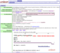
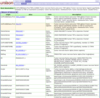
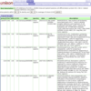
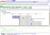
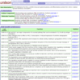
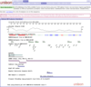
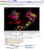

|  |
The Unison summary page for a specified sequence. |
|  |
Aliases are the identifiers and accessions by which a sequence is
known. Most sequences appear in multiple databases (sometimes multiple
times), but they're stored non-redundantly in Unison. This page shows
all of the aliases for a given sequence. |
|  |
Sequences from NCBI's patent database within a user-specifiable
neighborhood of a query. Derwent Geneseq sequences will also be shown if
available, but these are not included in the public release.
|
|  |
Most human sequences are aligned to the Human Genome
using pmap (Tom Wu, Colin Watanabe).
This page summarizes those alignments.
|
|  |
GO and NCBI GeneRIFs (References into Function) |
|  |
All predicted sequence features on one panel. Mouseovers on features
provide a digest of the feature, and most features provide links to
models or source data. |
|  |
Structure and domain visualization using JMol. Domains, SNPs, and
other features stored in Unison may be selected and displayed on
structure. This page also supports the display of features that are
specified by URL query arguments.
|
{kind=link}
{kind=link}
{kind=link}
{kind=link}
{kind=link}
{kind=link}
{kind=link}